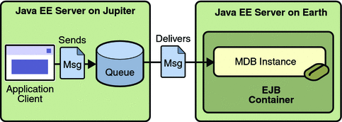

An Application Example That Consumes Messages from a Remote Server
This section and the following section explain how to write, compile, package, deploy, and run a pair of Java EE modules that run on two Java EE servers and that use the JMS API to interchange messages with each other. It is a common practice to deploy different components of an enterprise application on different systems within a company, and these examples illustrate on a small scale how to do this for an application that uses the JMS API.
However, the two examples work in slightly different ways. In this first example, the deployment information for a message-driven bean specifies the remote server from which it will consume messages. In the next example, the same bean is deployed on two different servers, so it is the client module that specifies the servers (one local, one remote) to which it is sending messages.
This first example divides the example in Chapter 23, A Message-Driven Bean Example into two modules (not applications): one containing the application client, and the other containing the message-driven bean.
This section covers the following topics:
Building, Deploying, and Running the consumeremoteModules Using NetBeans IDE
Building, Deploying, and Running the consumeremote Modules Using Ant
You will find the source files for this section in tut-install/javaeetutorial5/examples/jms/consumeremote/. Path names in this section are relative to this directory.
Overview of the consumeremote Example Modules
Except for the fact that it is packaged as two separate modules, this example is very similar to the one in Chapter 23, A Message-Driven Bean Example:
One module contains the application client, which runs on the remote system and sends three messages to a queue.
The other module contains the message-driven bean, which is deployed on the local server and consumes the messages from the queue on the remote server.
The basic steps of the modules are as follows.
The administrator starts two Java EE servers, one on each system.
On the local server, the administrator deploys the message-driven bean module, which uses a connection factory that specifies the remote server where the client is deployed.
On the remote server, the administrator places the client JAR file.
The client module sends three messages to a queue.
The message-driven bean consumes the messages.
Figure 32-3 illustrates the structure of this application. You can see that it is almost identical to Figure 23-1 except that there are two Java EE servers. The queue used is the one on the remote server; the queue must also exist on the local server for resource injection to succeed.
Figure 32-3 A Java EE Application That Consumes Messages from a Remote Server
Writing the Module Components for the consumeremote Example
Writing the components of the modules involves
Coding the application client
Coding the message-driven bean
The application client, jupiterclient/src/java/SimpleClient.java, is almost identical to the one in The simplemessage Application Client.
Similarly, the message-driven bean, earthmdb/src/java/MessageBean.java, is almost identical to the one in The Message-Driven Bean Class.
The only major difference is that the client and the bean are packaged in two separate modules.
Creating Resources for the consumeremote Example
For this example, the message-driven bean uses the connection factory named jms/JupiterConnectionFactory, which you created in Creating Administered Objects for Multiple Systems. Use the Admin Console to verify that the connection factory still exists and that its AddressList property is set to the name of the remote system. Because this bean must use a specific connection factory, the connection factory is specified in the mdb-connection-factory element of the sun-ejb-jar.xml file.
If you deleted the connection factory, you can recreate it as follows:
Go to the following directory:
tut-install/javaeetutorial5/examples/jms/consumeremote/earthmdb/
Type the following command:
ant create-remote-factory -Dsys=remote-system-name
Replace remote-system-name with the actual name of the remote system.
The application client can use any connection factory that exists on the remote server; it uses jms/ConnectionFactory. Both components use the queue named jms/Queue, which you created in Creating JMS Administered Objects for the Synchronous Receive Example.
Using Two Application Servers for the consumeremote Example
As in Running JMS Client Programs on Multiple Systems, the two servers are named earth and jupiter.
The Application Server must be running on both systems.
Which system you use to package and deploy the modules and which system you use to run the client depend on your network configuration (which file system you can access remotely). These instructions assume that you can access the file system of jupiter from earth but cannot access the file system of earth from jupiter. (You can use the same systems for jupiter and earth that you used in Running JMS Client Programs on Multiple Systems.)
You can package both modules on earth and deploy the message-driven bean there. The only action you perform on jupiter is running the client module.
Building, Deploying, and Running the consumeremoteModules Using NetBeans IDE
To package the modules using NetBeans IDE, perform these steps:
In NetBeans IDE, choose Open Project from the File menu.
In the Open Project dialog, navigate to tut-install/javaeetutorial5/examples/jms/consumeremote/.
Select the earthmdb folder.
Select the Open as Main Project check box.
Click Open Project.
Right-click the earthmdb project and choose Build.
This command creates a JAR file that contains the bean class file and the sun-ejb-jar.xml deployment descriptor file.
Choose Open Project from the File menu.
Select the jupiterclient folder.
Select the Open as Main Project check box.
Click Open Project.
Right-click the jupiterclient project and choose Build.
This target creates a JAR file that contains the client class file and a manifest file.
To deploy the earthmdb module and run the application client, perform these steps:
Right-click the earthmdb project and choose Set as Main Project.
Right-click the earthmdb project and choose Undeploy and Deploy.
Copy the jupiterclient module to the remote system (jupiter):
In a terminal window, change to the directory tut-install/javaeetutorial5/examples/jms/consumeremote/jupiterclient/dist/.
Type a command like the following:
cp jupiterclient.jar F:/
That is, copy the client JAR file to a location on the remote filesystem.
Go to the directory on the remote system where you copied the client JAR file.
Use the following command:
appclient -client jupiterclient.jar
On jupiter, the output of the appclient command looks like this:
Sending message: This is message 1 Sending message: This is message 2 Sending message: This is message 3
On earth, the output in the server log looks something like this (wrapped in logging information):
MESSAGE BEAN: Message received: This is message 1 MESSAGE BEAN: Message received: This is message 2 MESSAGE BEAN: Message received: This is message 3
Undeploy the message-driven bean after you finish running the client. To undeploy the earthmdb module, perform these steps:
Click the Services tab.
Expand the Servers node.
Expand the Sun Java System Application Server node.
Expand the Applications node.
Expand the EJB Modules node.
Right-click earthmdb and choose Undeploy.
To remove the generated files, follow these steps:
Right-click the earthmdb project and choose Clean.
In the command line window from which you copied the client JAR file, go to a directory other than the jupiterclient/dist directory.
Right-click the jupiterclient project and choose Clean.
You can also delete the jupiterclient.jar file from the remote filesystem.
Building, Deploying, and Running the consumeremote Modules Using Ant
To package the modules using Ant, perform these steps:
Go to the following directory:
tut-install/javaeetutorial5/examples/jms/consumeremote/earthmdb/
Type the following command:
ant
This command creates a JAR file that contains the bean class file and the sun-ejb-jar.xml deployment descriptor file.
Go to the jupiterclient directory:
cd ../jupiterclient
Type the following command:
ant
This target creates a JAR file that contains the client class file and a manifest file.
To deploy the earthmdb module, perform these steps:
Change to the directory earthmdb:
cd ../earthmdb
Type the following command:
ant deploy
To copy the jupiterclient module to the remote system, perform these steps:
Change to the directory jupiterclient/dist:
cd ../jupiterclient/dist
Type a command like the following:
cp jupiterclient.jar F:/
That is, copy the client JAR file to a location on the remote filesystem.
To run the client, perform the following steps:
Go to the directory on the remote system (jupiter) where you copied the client JAR file.
Use the following command:
appclient -client jupiterclient.jar
On jupiter, the output of the appclient command looks like this:
Sending message: This is message 1 Sending message: This is message 2 Sending message: This is message 3
On earth, the output in the server log looks something like this (wrapped in logging information):
MESSAGE BEAN: Message received: This is message 1 MESSAGE BEAN: Message received: This is message 2 MESSAGE BEAN: Message received: This is message 3
Undeploy the message-driven bean after you finish running the client. To undeploy the earthmdb module, perform these steps:
Change to the directory earthmdb.
Type the following command:
ant undeploy
You can also delete the jupiterclient.jar file from the remote filesystem.
To remove the generated files, use the following command in both the earthmdb and jupiterclient directories:
ant clean